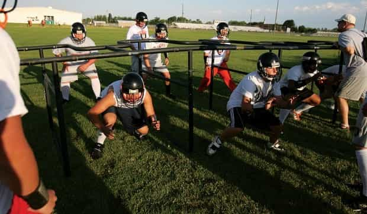
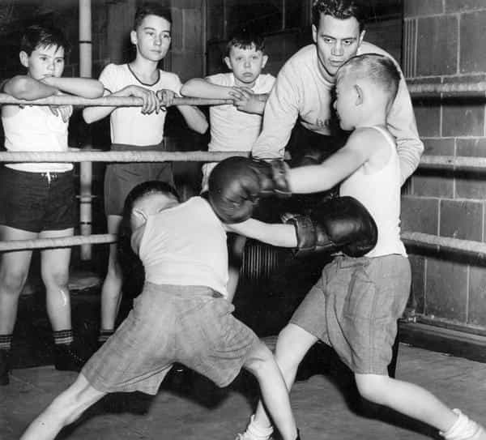

Corey is an iconoclast and the author of 'Man's Fight for Existence'. He believes that the key to life is for men to honour their primal nature. Visit his new website at primalexistence.com


Let’s face it, the education system today is a total disgrace. The boys who are forced into schools are socialized to behave like girls, their imagination and dreams are crushed, and they’re fed progressive propaganda in every step of the way. The SJWs we see today are the direct results of decades of social conditioning in these educational institutions.
So, as a counter, I propose a new education system that will revitalize masculinity and stabilize society as a whole.
They look more like men than half of the millennials.
Systemic emasculation of men begins in our schools where boys and girls are treated as equals. It’s time to abolish that and have different standards for different sexes. There’s no practical reason to keep boys and girls in the same classrooms.
If you’re going to separate the boys from the girls, you need male teachers to guide them. China is already doing the right thing by trying get more male teachers to make men out of boys. If you’re not teaching the young ones how to be men, what are you teaching them?

The boys are growing and they’re full of energy. But with modern technology, many are staying home glued to electronic screens. In fact, the majority in the UK are spending less time outside than prison inmates.
I don’t think they need to be crowded into classrooms and given Ritalin for not sitting still; just let them be more active. Make them strong by teaching them to cultivate their body from a young age.

Bullies don’t pick on kids who are strong and confident; it’s always the weaklings who give off a loser vibe who get targeted. So I say teach the boys how to fight so that they’ll be strong. Boxing or martial arts should be a requirement. Bullying probably won’t stop, but it’s better than leaving the boys defenseless.

This was me in high school and university.
When teenagers go through puberty, their circadian rhythm shifts by three hours only to be corrected in adulthood. This means that it’s nearly impossible for them to sleep early as their melatonin production in the brain doesn’t start until late night. And the fact that schools start early only leads to sleep deprivation that damages their physical growth and ability to learn.
So I say start schools around 10 or 11am and let them get all the sleep they need.
Overload, the fastest way to kill motivation and the desire to learn.
There’s no need to waste money and time force-feeding facts into the mind. Teach only the essentials and let their own curiosity lead to discovery. Studying is not learning.

Meanwhile in Russia…
A typical class today is like this: the teacher dumps facts for the students to copy and memorize, the students do their homework and tests for grades. If a student performs poorly due to whatever reason, the teacher blames the student for being dumb and lazy. It’s a moronic system.
So, instead of dumping useless knowledge in hopes that they’ll soak it up, why not teach the fundamentals of life? Teach them about discipline, perseverance, courage, honor, leadership, accountability, to not be discouraged by the critics, to never give up, and to stand up again after each failure.

Most of what boys learn at school are worthless and forgotten after graduation. Instead, they should be taught how to do physical labor and learn useful skills that they will carry for the rest of their lives. Today, far too many young men are losing out on opportunities because they don’t have technical skills and refuse to work with their hands.
Our current education system seems to be developed specifically to breed a horde of minimum-wage workers for corporations to exploit. It’s easy to look at today’s pitiful youth and blame them for their economic station. You can tell them that it’s their fault that they’re poor or don’t have a decent job, but the fact is, most of them have been trained to be that way because of our education system. They were taught to be passive and obedient, and that they can have their dream job if they just believed in it. And they all fell for it.
So, instead of keeping a blindfold on them regarding finances, teach them how to save and make money. Let them know how money circulates around in our society.
Speaking of money, there’s no better way to teach the young how to become independent and responsible than by teaching them to be an entrepreneur.
Many people in the manosphere have a habit of simply telling someone to start his own business from ground up, but the reality is that today’s youth are clueless because they’ve been trained to conform and not think for themselves. They’ve been taught to be safe and not take chances. I don’t think there’s a better way to solve the current youth unemployment and underemployment than teaching students to be their own boss.
Without values, boys will simply slip away into the culture of decadent consumerism and hedonism. I find it amazing that schools today barely teach anything that will keep the society’s moral fabric together. When I went to school in Canada, the only “value” they taught me was multiculturalism and progressivism. (Yeah, thanks assholes. Looks like this one backfired badly and turned against you.)
It doesn’t matter if it’s Christian or Confucian values—teach the youth something. Any traditional or national value is better than nothing.

I don’t think it’s healthy to teach kids from a young age that they can get freebies from the government courtesy of the tax payers. In exchange for their education, they should do volunteer work for their communities and clean and maintain their own schools. This way, they’ll appreciate their education more and be better motivated to learn.

Today’s parents are sickening with the way they spoil and shelter their children. The result of their piss-poor parenting and pandering is already apparent for all to see. The majority of adolescents now are narcissistic attention-whores who are lazy and entitled while being emotionally insecure and immature. To think that these whiny, self-absorbed gremlins will grow up and lead the future is truly frightening.
My suggestion is that kids today should have their egos crushed in schools and learn to earn the respect they desire. No more telling them how special they are, no more sheltering their precious feelings, and no more lies about how great they are. No, you kids all dumb and worthless sack of monkey shits until you can prove me otherwise.

Sex relations is one of the most important aspect of human life, yet they’re not even taught in schools. Teach boys how to be men and teach girls how to be women, then tell them how to get along. Is that really too hard? Yes, because today’s society wants to androgynize the population into economic units while destroying families and sex relations in the process.
Besides general sex education, boys should be taught about the female nature and the dynamics of sex relationships. Even just one hour a week of red pill knowledge would make all the difference.

Once all of the above are accomplished, boys should be set free. They need to learn how to be autonomous and try new things for themselves. They need to let their own curiosities and imagination lead them to their dreams. They need to fail over and over without a net to catch them so that they will learn on their own. Let them make their own decisions and face the consequences. Let them fulfill their own potentials without anyone holding them back or holding them up. Let them be men.
Sadly, even though it will create a better future for everyone at a far less cost than all the money governments are wasting, none of this will happen due to political correctness, bureaucracy, and the general state of our decaying society. The best you can do is to train your boys yourself and minimize all the toxic influence of our current culture.
Read More: How Your Education Failed You